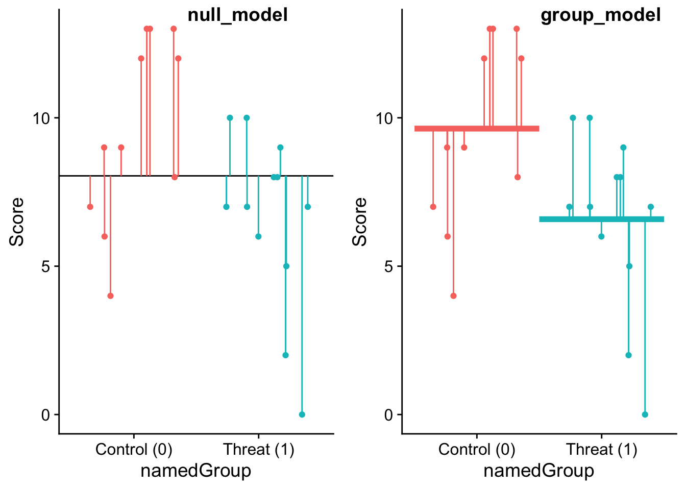

In this walkthrough, we’ll provide an example of this idea using the t-test (although the logic here will be revisited in upcoming weeks). In fact there is much overlap between this walkthough and Flora, Chapter 3.
To begin, let’s load in some of the packages that we will need:
pacman::p_load(tidyverse, devtools, broom, plotly, pander, cowplot)devtools::install_github("wilkelab/ungeviz")# for drawing horizontal lines
Skipping install of 'ungeviz' from a github remote, the SHA1 (aeae12b0) has not changed since last install.
Use `force = TRUE` to force installation
And a dataset containing scores from two separate groups. Let’s reload the stereotype data from the first walkthrough:
Rows: 23 Columns: 3
── Column specification ────────────────────────────────────────────────────────
Delimiter: "\t"
chr (1): ID
dbl (2): Score, Group
ℹ Use `spec()` to retrieve the full column specification for this data.
ℹ Specify the column types or set `show_col_types = FALSE` to quiet this message.
[1] Control (0) Threat (1)
Levels: Control (0) Threat (1)
27.1 group means, grand means and their models
We left off the last walkthrough distinguishing between group means and grand means; and how there relationship holds if the null hypothesis is true. To simply reiterate, if the null hypothesis is true that there is no mean difference between two independent samples, then not only should the two means be equal to one another, but they should also be equal to the grand mean. We also hinted that the grand mean figured prominently in the null_hypothesis_models that we first introduced last week in regression. In that wall through we talked about how the null_model was built using (random) variation about the mean of out outcome variable as the only predictor. The same holds here, but can be restated that the null_model is built using random variation around the grand mean as the only predictor (mathematically this is the same thing). In the case of our stereotype_data:
where ~1 is the intercept indicating the grand mean of both the Control group and Threat group combined.
Looking at our stereotype_data scores, the null_model can be conveyed graphically. First, in order to do so we need to add the predicted scores from our model to our stereotype_data data frame:
Below the red points represent control group scores with their residuals (lines), the green are the threat group scores, and the horizontal line is the grand mean. The sum of the residuals indicates the amount of error in this model (termed random error).
library(ungeviz)null_plot<-ggplot(data =stereotype_data, aes( x =namedGroup, y =Score, col =namedGroup))+geom_hline(yintercept =mean(stereotype_data$Score))+geom_point(position =position_jitter(width =.4, height =0, seed =1))+geom_linerange(aes(ymin =means_fitted, ymax =Score), position =position_jitter(width =.4, height =0, seed =1))+theme_cowplot()+theme(legend.position="none")show(null_plot)
In contrast, our group_model includes out different groups as a predictor, namely saying that we expect scores to differ between our two groups.
group_model<-lm(Score~namedGroup, data =stereotype_data)
Visually, the same data is plotted below, except this time the residual error considers the mean of each group. That is rather than any scores error being determined with respect to the grand mean, its now determined with respect the the mean of its group (the colored horiztonal lines)
library(ungeviz)# adding the predicted scores from the group model to the data frame (see above)stereotype_data<-stereotype_data%>%mutate(group_fitted =group_model$fitted.values)group_plot<-ggplot(data =stereotype_data, aes(x =namedGroup, y =Score, col =namedGroup))+stat_summary(geom ="hpline", width =1, size =1.5)+geom_point(position =position_jitter(width =.4, height =0, seed =1))+geom_linerange(aes(ymin =group_fitted, ymax =Score), position =position_jitter(width =.4, height =0, seed =1))+theme_cowplot()+theme(legend.position="none")show(group_plot)
No summary function supplied, defaulting to `mean_se()`
Warning: Using the `size` aesthetic in this geom was deprecated in ggplot2 3.4.0.
ℹ Please use `linewidth` in the `default_aes` field and elsewhere instead.
Looking at the two plots side-by-side, it’s pretty apparent the one of these fits much better than the other.
No summary function supplied, defaulting to `mean_se()`

27.2 an analysis of variance (aka variability accounted for)
Last week, we acknowledged that regression was a test for the amount of variance that our model including the predictor accounts for above and beyond the null_model. This value, our coefficient of determination, was measured/expressed as \(r^2\) and tested for significance using an \(F\)-test. The same holds true here. Performing an analysis of variance to compare the two models we see that the model that includes Group as a predictor lowers the residual sum of squares (RSS) enough to be deemed significant. Rather the difference between the null_model RSS and the residual_model RSS is enough to generate an \(F\)-ratio of 5.76 which is significant at the \(p<.05\) level. We’ll get into the details of how this ratio is calculated next week.
Analysis of Variance Table
Model 1: Score ~ 1
Model 2: Score ~ namedGroup
Res.Df RSS Df Sum of Sq F Pr(>F)
1 22 254.96
2 21 201.46 1 53.494 5.5761 0.02795 *
---
Signif. codes: 0 '***' 0.001 '**' 0.01 '*' 0.05 '.' 0.1 ' ' 1
27.3 looking at the group_model output
So, the group model is significantly better. What does that mean? Simply adding Group as a predictor to our model provides us with enough information about the variation in our data to suggest that that variation (e.g., differences in scores) migh be systematically driven by group differences (in this case related to threat and non-threat). Before diving into the group_model I want to take a moment and look at those group means again:
Call:
lm(formula = Score ~ namedGroup, data = stereotype_data)
Residuals:
Min 1Q Median 3Q Max
-6.5833 -1.6098 0.4167 2.3902 3.4167
Coefficients:
Estimate Std. Error t value Pr(>|t|)
(Intercept) 9.6364 0.9339 10.319 1.12e-09 ***
namedGroupThreat (1) -3.0530 1.2929 -2.361 0.0279 *
---
Signif. codes: 0 '***' 0.001 '**' 0.01 '*' 0.05 '.' 0.1 ' ' 1
Residual standard error: 3.097 on 21 degrees of freedom
Multiple R-squared: 0.2098, Adjusted R-squared: 0.1722
F-statistic: 5.576 on 1 and 21 DF, p-value: 0.02795
Starting from the top, recall that our group_model had namedGroup as a predictor with two levels—Control and Threat.
The Coefficients section conveys important information about both of our Groups. We see Threat listed (namedGroupThreat) but what of Control? It’s there too, captured in the (Intercept). Thinking back to our discussion on the linear regression equation:
\[
\hat{Y} = \beta_0 + \beta_1*x + \epsilon
\]
the intercept, \(\beta_0\), is the value of our predicted outcome, \(\hat{Y}\), when the value of our predictor, \(x\) is zero. In this case, R takes the first level in alphabetical order and sets it as “0” (which is why I added the numeric coding) and each subsequent level goes up an integer. So the (Intercept) is the value of our predicted outcome variable when namedGroup = Control, or 9.6364. The coefficient for namedGroupThreat, -3.0530 represents the slope of the regression line. So for every value of 1 we go increase for our predictor, the predicted outcome goes down 3.0530. Plotting the data, including the regression line, and the group means (larger points)
ggplot(data =stereotype_data, aes(x =namedGroup, y =Score, col =namedGroup))+geom_point(position =position_jitter(width =.2, height =0, seed =1))+stat_summary(fun =mean, size =1, color ="black", mapping=aes(group=1), geom="line")+stat_summary(size=1, geom ="pointrange")+theme_cowplot()+theme(legend.position="none")
Warning: Using `size` aesthetic for lines was deprecated in ggplot2 3.4.0.
ℹ Please use `linewidth` instead.
No summary function supplied, defaulting to `mean_se()`
The regression line connects the two series at their means. It starts at the intercept in the Control group 9.6364, and travels down 3.0530 to pass through the Threat. So… 9.6364 - 3.0530 = 6.5834.
Turning out attention to the \(t\) value associated for namedGroupThreat, this is the exact same \(t\) and \(p\) that we get when we use t.test()
t.test(Score~namedGroup, data =stereotype_data, var.equal =T)
Two Sample t-test
data: Score by namedGroup
t = 2.3614, df = 21, p-value = 0.02795
alternative hypothesis: true difference in means between group Control (0) and group Threat (1) is not equal to 0
95 percent confidence interval:
0.3643033 5.7417573
sample estimates:
mean in group Control (0) mean in group Threat (1)
9.636364 6.583333
This \(t\) value is also the square-root of the \(F\)-value obtained in the model analysis of variance.
Looking forward, everything we’ve said in the last two walkthroughs apply to when we get to ANOVA as well.
# A tibble: 2 × 3
namedGroup mean sumsq
<fct> <dbl> <dbl>
1 Control (0) 9.64 101.
2 Threat (1) 6.58 101.
Source Code
---title: "t-test? It's just a linear model"---In this walkthrough, we'll provide an example of this idea using the t-test (although the logic here will be revisited in upcoming weeks). In fact there is much overlap between this walkthough and Flora, Chapter 3.To begin, let's load in some of the packages that we will need:```{r}pacman::p_load(tidyverse, devtools, broom, plotly, pander, cowplot)devtools::install_github("wilkelab/ungeviz") # for drawing horizontal lines```And a dataset containing scores from two separate groups. Let's reload the stereotype data from the first walkthrough:```{r}stereotype_data <-read_delim("https://www.uvm.edu/~statdhtx/methods8/DataFiles/Tab7-7.dat", delim ="\t")stereotype_data <- stereotype_data %>%mutate("namedGroup"= dplyr::recode_factor(Group,"1"="Control (0)", "2"="Threat (1)") )stereotype_dataunique(stereotype_data$namedGroup)```## group means, grand means and their modelsWe left off the last walkthrough distinguishing between group means and grand means; and how there relationship holds if the null hypothesis is true. To simply reiterate, if the null hypothesis is true that there is no mean difference between two independent samples, then not only should the two means be equal to one another, but they should also be equal to the grand mean. We also hinted that the grand mean figured prominently in the **`null_hypothesis_models`** that we first introduced last week in regression. In that wall through we talked about how the **`null_model`** was built using (random) variation about the mean of out outcome variable as the only predictor. The same holds here, but can be restated that the **`null_model`** is built using random variation around the **grand mean** as the only predictor (mathematically this is the same thing). In the case of our `stereotype_data`:```{r}null_model <-lm(Score ~1, data = stereotype_data)```where `~1` is the intercept indicating the grand mean of both the Control group and Threat group combined.Looking at our `stereotype_data` scores, the `null_model` can be conveyed graphically. First, in order to do so we need to add the predicted scores from our model to our `stereotype_data` data frame:```{r}stereotype_data <- stereotype_data %>%mutate(means_fitted = null_model$fitted.values)```Below the red points represent control group scores with their residuals (lines), the green are the threat group scores, and the horizontal line is the grand mean. The sum of the residuals indicates the amount of error in this model (termed random error).```{r}library(ungeviz)null_plot <-ggplot(data = stereotype_data, aes( x = namedGroup, y = Score, col = namedGroup)) +geom_hline(yintercept =mean(stereotype_data$Score)) +geom_point(position =position_jitter(width = .4, height =0, seed =1)) +geom_linerange(aes(ymin = means_fitted, ymax = Score),position =position_jitter(width = .4, height =0, seed =1)) +theme_cowplot() +theme(legend.position="none")show(null_plot)```In contrast, our **`group_model`** includes out different groups as a predictor, namely saying that we expect scores to differ between our two groups.```{r}group_model <-lm(Score ~ namedGroup, data = stereotype_data)```Visually, the same data is plotted below, except this time the residual error considers the mean of each group. That is rather than any scores error being determined with respect to the grand mean, its now determined with respect the the mean of its group (the colored horiztonal lines)```{r}library(ungeviz)# adding the predicted scores from the group model to the data frame (see above)stereotype_data <- stereotype_data %>%mutate(group_fitted = group_model$fitted.values)group_plot <-ggplot(data = stereotype_data, aes(x = namedGroup, y = Score, col = namedGroup)) +stat_summary(geom ="hpline", width =1, size =1.5) +geom_point(position =position_jitter(width = .4, height =0, seed =1)) +geom_linerange(aes(ymin = group_fitted, ymax = Score),position =position_jitter(width = .4, height =0, seed =1)) +theme_cowplot() +theme(legend.position="none")show(group_plot)```Looking at the two plots side-by-side, it's pretty apparent the one of these fits much better than the other.```{r}plot_grid(null_plot, group_plot,labels =c("null_model", "group_model"), label_x = .4)```## an analysis of variance (aka variability accounted for)Last week, we acknowledged that regression was a test for the amount of variance that our model including the predictor accounts for above and beyond the `null_model`. This value, our coefficient of determination, was measured/expressed as $r^2$ and tested for significance using an $F$-test. The same holds true here. Performing an analysis of variance to compare the two models we see that the model that includes **Group** as a predictor lowers the residual sum of squares (RSS) enough to be deemed significant. Rather the difference between the `null_model` RSS and the `residual_model` RSS is enough to generate an $F$-ratio of 5.76 which is significant at the $p<.05$ level. We'll get into the details of how this ratio is calculated next week.```{r}anova(null_model, group_model)```## looking at the `group_model` outputSo, the group model is significantly better. What does that mean? Simply adding **Group** as a predictor to our model provides us with enough information about the variation in our data to suggest that that variation (e.g., differences in scores) migh be systematically driven by group differences (in this case related to threat and non-threat). Before diving into the `group_model` I want to take a moment and look at those group means again:```{r}group_means <- stereotype_data %>%group_by(namedGroup) %>%summarise(mean =mean(Score),sd =sd(Score))group_means```Ok. Now to look at the outcome of our `group_model````{r}summary(group_model)```Starting from the top, recall that our `group_model` had **namedGroup** as a predictor with two levels---**Control** and **Threat.**The **Coefficients** section conveys important information about both of our **Groups**. We see *Threat* listed (namedGroupThreat) but what of Control? It's there too, captured in the **(Intercept).** Thinking back to our discussion on the linear regression equation:$$\hat{Y} = \beta_0 + \beta_1*x + \epsilon$$the intercept, $\beta_0$, is the value of our predicted outcome, $\hat{Y}$, when the value of our predictor, $x$ is zero. In this case, **R** takes the first level in alphabetical order and sets it as "0" (which is why I added the numeric coding) and each subsequent level goes up an integer. So the **(Intercept)** is the value of our predicted outcome variable when namedGroup = Control, or 9.6364. The coefficient for **namedGroupThreat**, -3.0530 represents the slope of the regression line. So for every value of 1 we go increase for our predictor, the predicted outcome goes *down* 3.0530. Plotting the data, including the regression line, and the group means (larger points)```{r}ggplot(data = stereotype_data, aes(x = namedGroup, y = Score, col = namedGroup)) +geom_point(position =position_jitter(width = .2, height =0, seed =1)) +stat_summary(fun = mean, size =1, color ="black", mapping=aes(group=1), geom="line") +stat_summary(size=1, geom ="pointrange") +theme_cowplot() +theme(legend.position="none")```The regression line connects the two series at their means. It starts at the intercept in the Control group 9.6364, and travels down 3.0530 to pass through the Threat. So... 9.6364 - 3.0530 = 6.5834.Reminding ourselves of the group means:```{r}stereotype_data %>%group_by(namedGroup) %>%summarise(mean =mean(Score)) %>%pander()```Turning out attention to the $t$ value associated for **namedGroupThreat**, this is the exact same $t$ and $p$ that we get when we use `t.test()````{r}t.test(Score~namedGroup, data = stereotype_data, var.equal = T)```This $t$ value is also the square-root of the $F$-value obtained in the model analysis of variance.Looking forward, everything we've said in the last two walkthroughs apply to when we get to ANOVA as well.```{r}stereotype_data %>%group_by(namedGroup) %>%summarize(mean =mean(Score),sumsq =sum((Score-mean(Score))^2) )```